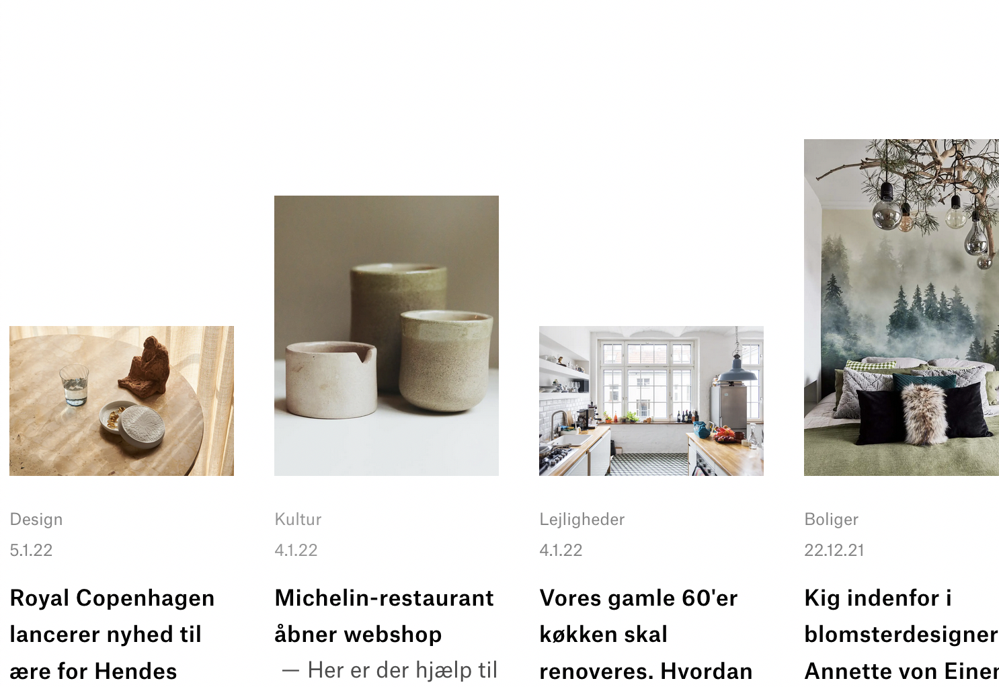

Research, Style Tile og moodboard
Jeg researchede først på forskellige hjemmesider hvad minimalisme indebar, så lavede først et moodboard hvor jeg fik noget inspiration fra forskellige hjemmesider der havde en minimalistisk stil. Efterfølgende lavede jeg et styletile hvor jeg havde analyseret BoBedres hjemmeside.

Stil pitch
Efter at have lavet moodboard og styletile begyndte mig og min gruppe at lave en stil pitch for vores stilart. Vi lavede en google præsentation som kan ses nedenstående
Billede materiale
Da jeg havde fundet et simpelt og neutralt koncept med et klinisk og organiseret udtryk og enkle indstillinger, udvalgte jeg nogle billeder med traditionalle beskæringer.